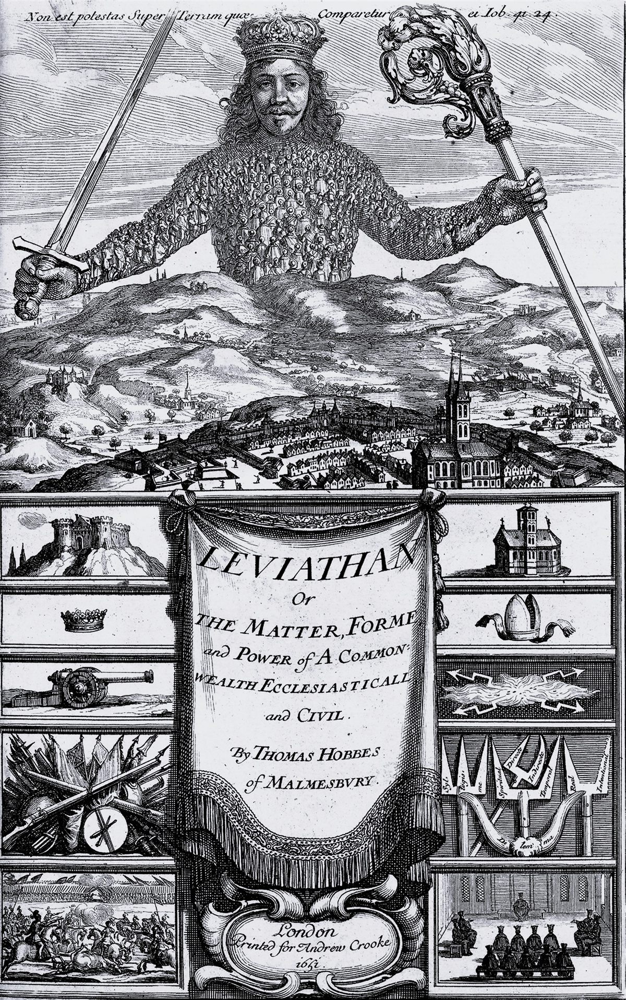
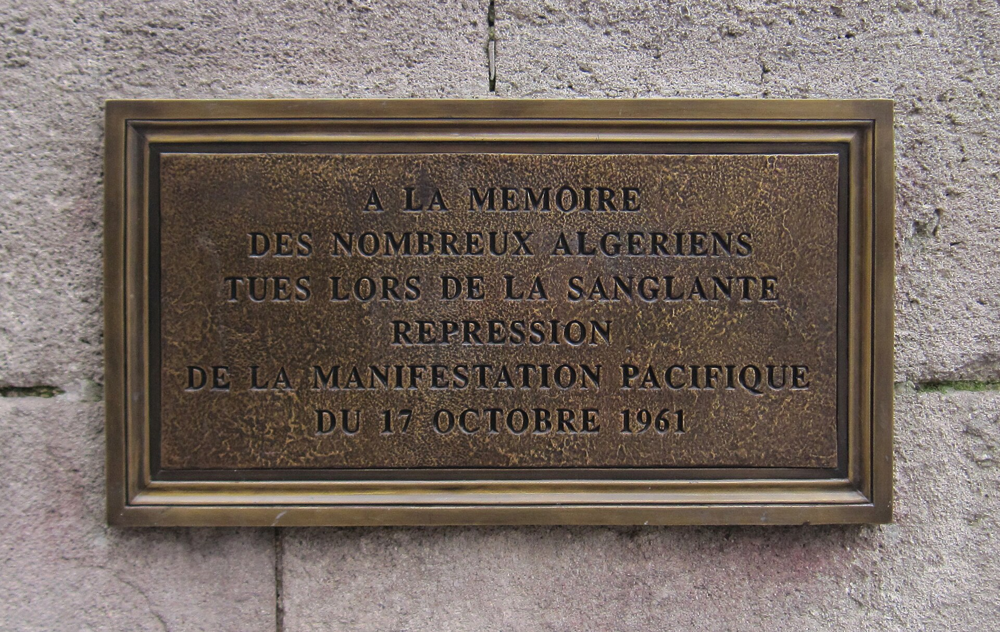
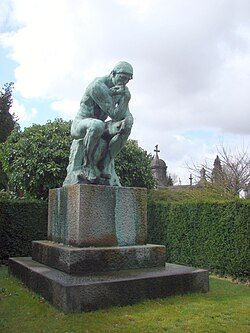

Le Léviathan est-il de retour ? Ce que Hobbes nous dit de la France d'aujourd'hui
Moins de liberté, plus de sécurité : le vieux contrat de Hobbes revient. Mais un État fort, fort pour qui, et contre qui ?
Lire l'article →
Moins de liberté, plus de sécurité : le vieux contrat de Hobbes revient. Mais un État fort, fort pour qui, et contre qui ?
Lire l'article →
Comment un homme sans avenir a pris l'Allemagne, puis l'a menée à sa chute en douze ans.
Lire l'article →
Un demi-siècle après le départ de l'Espagne, le sort du territoire n'est toujours pas réglé.
Lire l'article →
Une manifestation pacifique, une répression sanglante, puis des décennies de silence.
Lire l'article →
Un nouveau chemin de pensée arrive bientôt.